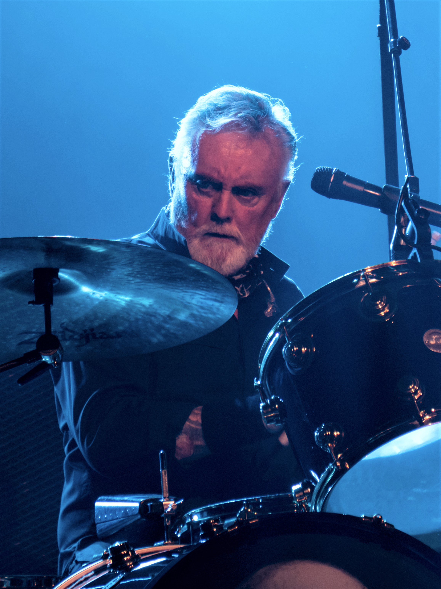

Roger Taylor
Roger Taylor, nacido el 26 de julio de 1949 en Norfolk, Inglaterra, es el baterista y uno de los fundadores de Queen. Taylor es conocido por su potente estilo de batería y su distintiva voz, que contribuyeron significativamente al sonido de la banda. Antes de Queen, Taylor tocaba en bandas locales y estudiaba odontología y biología, pero su pasión por la música lo llevó a unirse a Brian May y Freddie Mercury en la formación de Queen. Además de tocar la batería, Taylor escribió y cantó en varias canciones de Queen, como "I'm in Love with My Car" y "Radio Ga Ga," que se volvieron éxitos. A lo largo de su carrera, ha lanzado también varios álbumes en solitario. Su estilo y energía en el escenario lo han convertido en uno de los bateristas más icónicos del rock.